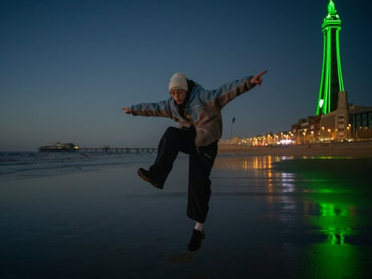

M ichael knows exactly how he feels about his home town of Blackpool . “It’s just brilliant,” he says. Walking along the beachfront past people soaking up the sunshine on benches and kids playing in the sand overlooked by Blackpool Tower, he throws out his arms with a huge grin. “For me, it has been an amazing place to grow up. I don’t understand why anyone would talk down their home town. If you feel shit about your town, you’re going to feel shit about yourself, right?”
Michael’s life may be going places – he’s studying fashion at college, is making music and has a part-time job entertaining visitors at the Sea Life aquarium – but he knows his positivity about Blackpool isn’t shared by his peers in the town.
Life for many young people here is tough, he says, for a myriad of complex and overlapping reasons; bad housing, poor educational and employment opportunities, crumbling and inadequate infrastructure and transport.
Michael in the Sea Life aquarium, where he works part-time
Despite Blackpool becoming one of the UK’s “trailblazer” neighbourhoods named in the government’s spending review and promised up to £20m regeneration investment over the next decade, proposed cuts to welfare amid the cost of living crisis are likely to hit young people in the town hard.
Considering all this, the recent finding from the University of Essex that young people in coastal towns are three times more likely to have an undiagnosed mental health condition than elsewhere in England doesn’t surprise him.
“There’s a lot of people my age here that just get stuck in this cycle of feeling like they’re going nowhere, that there’s nothing here for them,” he says. “And whenever the media come here they just want to write about the bad things that then makes this whole cycle get worse.”
Blackpool started rising through many deprivation indices in England and Wales a decade ago – with all overall measures at the local authority level showing Blackpool has become relatively more deprived since 2007 – and became what one University of Cambridge paper described as a “recurring media benchmark for coastal deprivation”.
Over the past few years, local and national media has focused almost exclusively on Blackpool through the lens of its poverty and deprivation statistics. Newspaper headlines such as one from the Express last year which compared Blackpool to Beirut where “kids walk streets ‘barefoot’ beside junkies” have become what some groups working with young people consider “poverty porn”.
Others see this characterisation of their town as a relentless drip of stigma and shame for young people already struggling to feel good about their prospects.
“If you just hear that your home town is scum all the time that sinks in,” says Michael.
Young people speak about their lives in Blackpool – video
“And what makes me angry is that it’s just not true that everything is bad here for people. So many good things are happening here but nobody is telling those stories. Everyone gets really pissed off when the media talks about how bad it is in Blackpool but it feels like there aren’t many people helping us be proud of where we’re from.”
Michael says his pride and belief in himself are partly thanks to his mother who raised him on her own and saw that nurturing his creativity was key to building his confidence.
He also says he wouldn’t have become the person he is now if he hadn’t found his community at House of Wingz, an “arts house” founded by couple Sam and Aish Bell Docherty.
Launched as a dance company in 2006, House of Wingz has evolved into a hub for youth and street culture. Tucked down a back street not far from the seafront, it has become a second home to Michael and hundreds of others from the town.
As well as the large dance studio, there is a music studio and skate ramp. Someone has set up a painting corner with an easel and oil paintings stacked against the wall. The place is buzzing with a hip-hop dance class in motion and teenagers clattering up and down the skate ramps.
Clockwise from top left: Michael goes through some dance moves in House of Wingz; Orson, who has been taking dance classes since he was eight; Joe, who likes to surround himself with ‘positive people’ and make music; Julia, who learned to dance at House of Wingz and now takes workshops of her own
“Basically, anything creative that we want to do, Sam and Aish will make it happen,” says Michael. His mum first took him there as an eight-year-old for street dance lessons. “They’re always like, ‘just find your passion and go for it’. You don’t need to be the best dancer or the best at anything, it’s fine to just be here and have a good, normal life doing interesting things.”
Orson, 22, is in the kitchen, cooling down after a dance lesson. Growing up in a single-parent household in Blackpool with three siblings, he saw his mum struggle to pay the bills.
“I know what it’s like to live in bad housing, and it’s shit,” he says. “Housing is a really big problem for young people here. You can’t help but feel bad about your life if you’re living like that. I hated school, I had a really hard time there but then I found dance and I found this place and it changed my life.”
Orson has been taking dance classes at House of Wingz since he was eight and is now a talented dancer. “I’ve probably spent thousands of hours here,” he says.
He is now teaching and about to go on tour with his own dance company. He has no problem talking about how dancing makes him feel. “It makes me feel alive, like, really good about myself,” he says. “It’s like [I have] this confidence when I’m in a room and there’s music on, I just have this vision of what I can do with my body, how I can make something look cool, or weird or whatever I want. You walk out of here and you believe in yourself.”
Joe says that where he grew up hasn’t stopped him trying to follow his dreams
Many here speak of how finding House of Wingz helped them pivot out of periods of depression or taught them skills that opened up new pathways. For 23-year-old Julia, who moved to Blackpool from Poland and initially struggled with feeling isolated, “it just brought all these cool people into my life. I learned to be a dancer from nothing and now I’m teaching dance and going out into schools and running workshops. A lot of people say, ‘there’s nothing going on in Blackpool, it’s dead’, and I’m like, are you kidding? It’s frustrating that more people don’t know it’s here,” she says.
Joe says he has been given confidence to believe in himself and his music. “Finding this community has meant so much, just surrounding yourself with positive people and making music and doing productive things with your time. My life hasn’t been easy, I grew up in the wrong area but that hasn’t stopped me from trying my hardest to chase my dreams.”
Sitting outside in the afternoon sunshine, Sam and Aish Bell Doughty say they know that what they are providing isn’t going to fix the big, systemic problems in young people’s lives.
Sam and Aish Bell Doughty, who run House of Wingz, are working hard to get young people involved in the conversation about Blackpool’s future
“Life is so hard for a lot of kids here, many of them don’t have anything at all and they can face multiple disadvantages, but they also carry this negative view of what they can do with their lives,” says Aish. “It’s so difficult to shift that perspective or mindset because it’s generational.”
According to the Office for National Statistics, 28% of Blackpool’s population were classed as “economically inactive” last year – neither working nor looking for work. “Many young people in Blackpool, the adults in their life aren’t doing anything and they internalise and project all of this back on to their own lives and feel hopeless,” says Aish.
Aish and Sam want to get House of Wingz members such as Michael, Orson, Joe and Julia to be a part of the conversation about what young people need in Blackpool in order to be able to feel good about the town and their future in it.
They run a youth leadership programme at House of Wingz that gets older members of their community to teach dance to hundreds of younger children, which, says Aish, “helps kids in our town feel accepted and that they belong and that it’s good to be ambitious about their futures too”. Michael, Orson, Joe and Julia are on a steering committee with local policymakers to develop a new arts and culture strategy for Blackpool.
“The problem is, all the optics are wrong. You need to show young people that there are people in town doing creative, inspiring things. That’s how aspiration grows,” says Aish. “Often it’s not that young people need to get out of Blackpool, it’s just they need to find the right opportunities or pathways here but their voices aren’t being listened to enough – and they are the future of this town.”

Joe and Julia on the beach at sunset with Blackpool’s South Pier in the distance
Orson on Blackpool beach. A talented dancer, he says dancing ‘makes me feel alive, like, really good about myself’